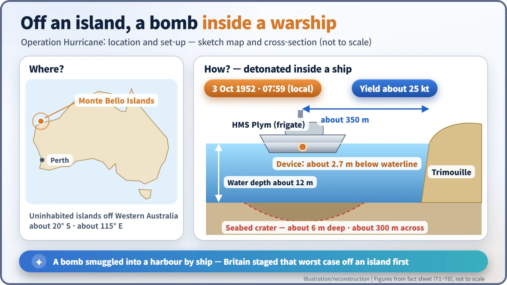
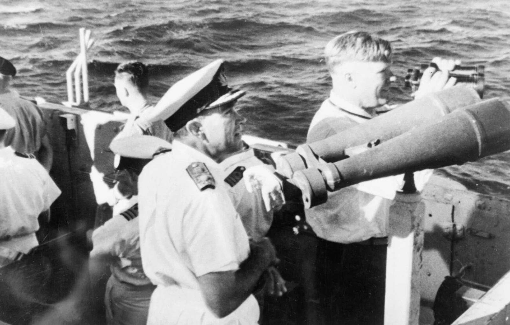
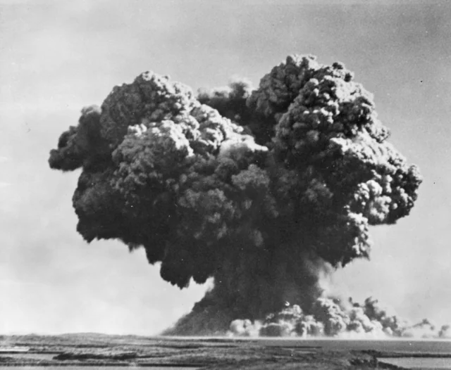
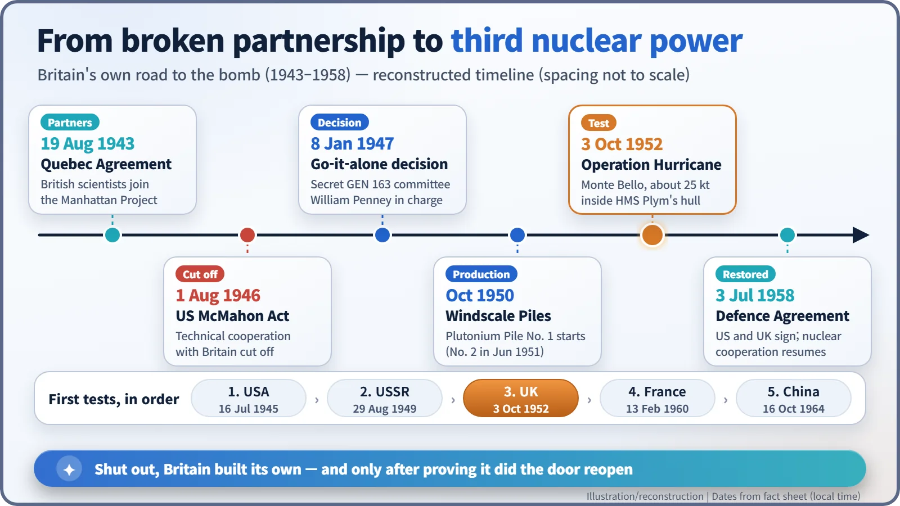

Nuclear History · 138
A Warship Sacrificed Whole — Operation Hurricane, Britain's First Atomic Bomb (1952)
A roughly 25-kiloton plutonium bomb hidden in a ship's hull made Britain the third nuclear power, after the McMahon Act closed the American door.
On 3 October 1952 Britain exploded its first atomic bomb, not on a tower or from an aircraft but inside the hull of the frigate HMS Plym, moored off the Monte Bello Islands in Western Australia. The roughly 25-kiloton blast made Britain the world's third nuclear power, six years after the United States had cut off wartime atomic cooperation.
A ship with no return ticket
On 5 June 1952 an elderly Royal Navy frigate took on a strange cargo. Her name was HMS Plym, and her last voyage came with no return ticket: deep in her hold lay the body of Britain's first atomic bomb. She sailed halfway around the world and, on 8 August, dropped anchor off an uninhabited archipelago off Western Australia, the Monte Bello Islands. [1]
Partners in the bomb, then on its own
Britain had been on stage from the very first act of the atomic story. Under the Quebec Agreement of August 1943, British scientists joined the Manhattan Project, and among the British team at Los Alamos was a mathematician who calculated blast damage: William Penney (1909–1991). On 9 August 1945 he watched the bombing of Nagasaki from the observation B-29 "Big Stink". [3]
When the war ended, the door closed. The US Atomic Energy Act of 1946, the McMahon Act, signed on 1 August, barred the sharing of nuclear information with other countries, and Britain was no exception. The mood in Clement Attlee's (1883–1967) government is captured by a remark attributed to Foreign Secretary Ernest Bevin at a ministerial meeting in October 1946:
"We've got to have the bloody Union Jack flying on top of it."
It comes to us not from the minutes but from Penney's later recollection, and other versions exist. [2]
On 8 January 1947 a small, secret committee of ministers, GEN 163, agreed to go ahead. The programme was given a deliberately dull name, High Explosive Research, with Penney in charge. The plutonium came from new production reactors at Windscale in north-west England, the first of which started up in October 1950. Some plutonium also arrived from Canada, but whether any of it went into the first bomb is not clear from the records. [2]
Looking for a test site on the far side of the world
A bomb has to be tested. Britain asked to use an American test site and was turned down in October 1950, so it turned to a Navy suggestion in the Commonwealth: the Monte Bello Islands. Australia's prime minister, Robert Menzies, agreed in 1951, and on 26 February 1952 Prime Minister Winston Churchill told the House of Commons that a test would take place in Australia that year. [1]

Why blow it up inside a ship?
Not on a tower, not dropped from a plane, but inside a warship's hull: this is what makes Hurricane unusual. One scenario worried the British a great deal at the time: an enemy smuggling an atomic bomb into a major British port aboard a ship. A bomber can be seen on radar; one ordinary freighter in a busy harbour is far harder to spot. So the test recreated that situation. Plym was moored in about 12 m of water, roughly 350 m from Trimouille Island, and the device sat inside her hull about 2.7 m below the waterline. [1]

Five British ships, led by the escort carrier HMS Campania, were joined by eleven Australian vessels, and by 30 September everything was ready. [1]
07:59 on 3 October 1952
The device exploded at 07:59:24 local time on 3 October 1952, Western Australian time. In Universal Time that same moment was 23:59 on 2 October, which is why some sources give a date one day earlier. Neither is wrong; they simply use different clocks. The yield was about 25 kilotons, equivalent to roughly 25,000 tonnes of TNT. The principle was the same implosion design as the Nagasaki bomb: conventional explosives squeezing plutonium from all sides. [1]

The ship all but vanished. One participant recalled that "all that was left of her were a few fist-sized pieces of metal that fell like rain". On the seabed a saucer-shaped crater formed, about 6 m deep and about 300 m across. Contamination of the islands was, according to the records, "widespread and severe". A burst in shallow water lifts seawater and sediment along with the radioactive material and spreads it widely as it falls back. [1]
What it meant to be number three
Britain became the third country to test an atomic weapon, after the United States (1945) and the Soviet Union (1949). Penney was knighted on 23 October. His words capture the thinking of the age:
"the discriminative test for a first-class power is whether it has made an atomic bomb."
Yet the American door did not swing open. Just four weeks later, on 1 November, the United States set off "Ivy Mike", a test of the hydrogen-bomb principle, and pulled far ahead again; Congress saw little to gain from renewed cooperation. That came only with the US–UK Mutual Defence Agreement, signed on 3 July 1958. British testing in Australia continued after Hurricane, and its effects on participants and Aboriginal people were later examined separately by an Australian Royal Commission in 1984–85. [1] [4] [5]

Hurricane leaves a paradox. Cutting off an ally did not keep the secret contained; it produced another nuclear-armed state.